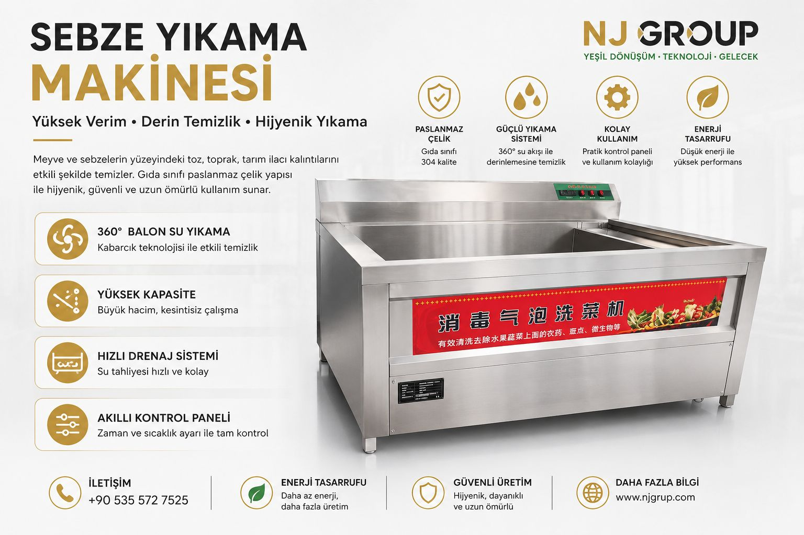

Sebze Hazırlama
WhatsApp ile teklif iste
Sebze Yıkama Makinesi
Yüksek verim, derin temizlik ve hijyenik yıkama
Meyve ve sebzelerin yüzeyindeki toz, toprak ve tarım kalıntılarını balonlu su akışı ile temizlemek için tasarlanmış profesyonel yıkama çözümüdür.
360° balonlu su yıkamaGıda sınıfı 304 paslanmaz çelikHızlı drenaj sistemiAkıllı kontrol paneliDüşük enerji tüketimi
Kullanım alanları
- Yemek fabrikaları
- Otel ve restoran mutfakları
- Sebze işleme tesisleri
- Market hazırlık alanları
Teknik bilgiler
| Malzeme | 304 paslanmaz çelik |
|---|---|
| Yıkama sistemi | Balonlu / sirkülasyonlu su akışı |
| Kapasite | Proje ihtiyacına göre belirlenir |
| Kontrol | Zaman ve çalışma ayarı yapılabilir |